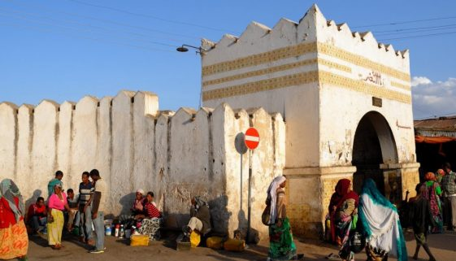
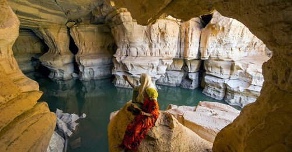

please click on this link to see: About Ethiopian
Historical places Ethiopia
Ethiopia is an ancient country whose unique cultural heritage, rich history and remarkable biodiversity are reflected in a tally of nine UNESCO World Heritage Sites –more than any other country in Africa. Within its borders, you'll find the world's fourth-holiest Islamic city, along with the oldest continuously-occupied town south of the Sahara. Compelling antiquities include the medieval rock-hewn churches of Lalibela and Gheralta, palaces and temples dating back 3,000 years, the magnificent 17th century castles of Gondar, and the oldest human fossils unearthed anywhere on the planet. Add to this the beautiful Simien and Bale Mountains, the spectacular volcanic landscapes of the Danakil Depression, and a wealth of mammals and birds found nowhere else in the world, and it's little wonder that Ethiopia has become the most attractive and popular emergent tourist destination in Africa.
Tourist destinations include Ethiopia's collection of national parks (including Semien Mountains National Park), and historic sites, such as the cities of Axum, Lalibela and Gondar, Harar Jugol walled city, Negash Mosque, in Negash and Sof Omar Caves. Figure 1. Axum statute  Figure 2. Harar Jugol  Figure 3. Sof Omar Caves
Developed in the 1960s, tourism declined greatly during the later 1970s and the 1980s under the Derg. Recovery began in the 1990s, but growth has been constrained by the lack of suitable hotels and other infrastructure, despite a boom in construction of small and medium-sized hotels and restaurants, and by the effects of drought and political instability. One encouraging aspect is the growing popularity of ecotourism, with significant potential for growth in Ethiopia. Travel retail sales are expected to continue to grow, posting an increase of 7% in 2006 and with a forecast 5% increase in 2007. Sales are driven primarily by expanding interest in ecotourism packages, including adventure travel, trekking[2] and walking safaris that are making up much of the tour operators' revenues.
Description
In addition, the following holidays, which may take place at any time of the year, are observed as public holidays:
About
This is the developer.
We are glad to travel with you. For more information click on this email address to contact the developer:nahommanwondu12@gmail.com